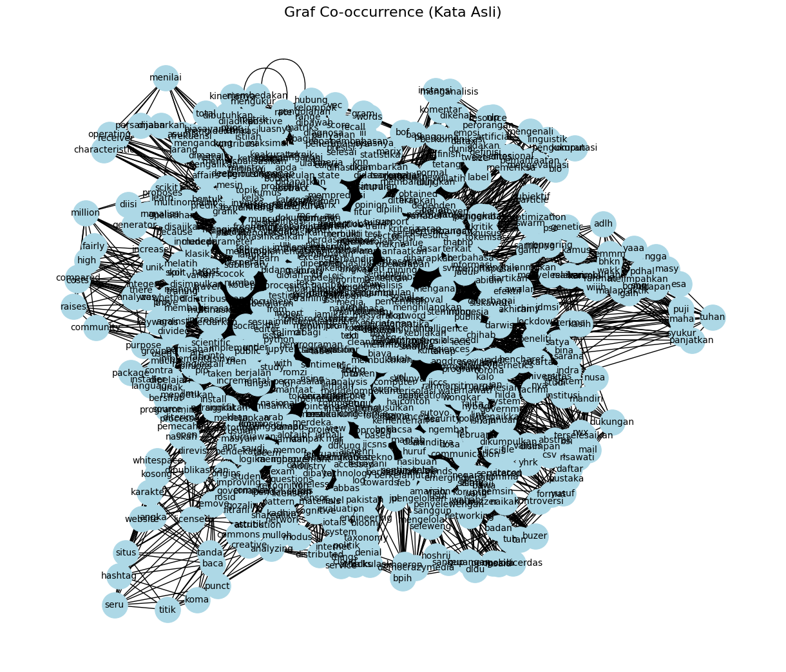

!pip install --upgrade pymupdf
Collecting pymupdf
Downloading pymupdf-1.26.6-cp310-abi3-manylinux_2_28_x86_64.whl.metadata (3.4 kB)
Downloading pymupdf-1.26.6-cp310-abi3-manylinux_2_28_x86_64.whl (24.1 MB)
?25l ━━━━━━━━━━━━━━━━━━━━━━━━━━━━━━━━━━━━━━━━ 0.0/24.1 MB ? eta -:--:--
━━━━━━━━━━━━━━━━━━━━━━━━━━━━━━━━━━━━━━━╸ 23.9/24.1 MB 133.5 MB/s eta 0:00:01
━━━━━━━━━━━━━━━━━━━━━━━━━━━━━━━━━━━━━━━╸ 23.9/24.1 MB 133.5 MB/s eta 0:00:01
━━━━━━━━━━━━━━━━━━━━━━━━━━━━━━━━━━━━━━━╸ 23.9/24.1 MB 133.5 MB/s eta 0:00:01
━━━━━━━━━━━━━━━━━━━━━━━━━━━━━━━━━━━━━━━━ 24.1/24.1 MB 39.6 MB/s eta 0:00:00
?25h
Installing collected packages: pymupdf
Successfully installed pymupdf-1.26.6
[notice] A new release of pip is available: 25.1.1 -> 25.3
[notice] To update, run: python3 -m pip install --upgrade pip
Ekstraksi PDF ke Teks#
import pymupdf
doc = pymupdf.open("contoh.pdf") # open a document
out = open("output.txt", "wb") # create a text output
for page in doc: # iterate the document pages
text = page.get_text().encode("utf8") # get plain text (is in UTF-8)
out.write(text) # write text of page
out.write(bytes((12,))) # write page delimiter (form feed 0x0C)
out.close()
---------------------------------------------------------------------------
FileNotFoundError Traceback (most recent call last)
/tmp/ipykernel_14740/655380305.py in ?()
1 import pymupdf
2
----> 3 doc = pymupdf.open("contoh.pdf") # open a document
4 out = open("output.txt", "wb") # create a text output
5 for page in doc: # iterate the document pages
6 text = page.get_text().encode("utf8") # get plain text (is in UTF-8)
/usr/local/python/3.12.1/lib/python3.12/site-packages/pymupdf/__init__.py in ?(self, filename, stream, filetype, rect, width, height, fontsize)
3061 self.page_count2 = extra.page_count_pdf
3062 else:
3063 self.page_count2 = extra.page_count_fz
3064 finally:
-> 3065 JM_mupdf_show_errors = JM_mupdf_show_errors_old
FileNotFoundError: no such file: 'contoh.pdf'
!pip install nltk
Requirement already satisfied: nltk in /usr/local/lib/python3.12/dist-packages (3.9.1)
Requirement already satisfied: click in /usr/local/lib/python3.12/dist-packages (from nltk) (8.3.1)
Requirement already satisfied: joblib in /usr/local/lib/python3.12/dist-packages (from nltk) (1.5.2)
Requirement already satisfied: regex>=2021.8.3 in /usr/local/lib/python3.12/dist-packages (from nltk) (2025.11.3)
Requirement already satisfied: tqdm in /usr/local/lib/python3.12/dist-packages (from nltk) (4.67.1)
with open('output.txt', 'r', encoding='utf-8') as file:
teks = file.read()
print(teks[:200]) # tampilkan 200 karakter pertama
Jurnal Manajemen Informatika (JAMIKA)
Volume 13 Nomor 1 Edisi April 2023
E ISSN: 2655-6960 | P ISSN: 2088-4125
OJS: https://ojs.unikom.ac.id/index.php/jamika
doi : 10.34010/jamika.v13i1.9424
#text = "Ini adalah kalimat pertama. Ini kalimat kedua? Ya!"
sentences = nltk.sent_tokenize(teks)
print(sentences)
# Output: ['Ini adalah kalimat pertama.', 'Ini kalimat kedua?', 'Ya!']
[' \nJurnal Manajemen Informatika (JAMIKA) \nVolume 13 Nomor 1 Edisi April 2023 \nE ISSN: 2655-6960 | P ISSN: 2088-4125 \nOJS: https://ojs.unikom.ac.id/index.php/jamika \n \n \ndoi : 10.34010/jamika.v13i1.9424 \n \n \n84\nPembobotan TF-IDF Menggunakan Naïve Bayes Pada Sentimen Masyarakat \nMengenai Isu Kenaikan BIPIH \n \nTF-IDF Weighting Using Naïve Bayes on Public Sentiment on The \nIssue of Rising BIPIH \n \nRisa Wati1*, Siti Ernawati2, Hilda Rachmi3 \n1,3Program Studi Sistem Informasi, Universitas Bina Sarana Informatika, Jakarta, Indonesia \n2Program Studi Sistem Informasi, Universitas Nusa Mandiri, Jakarta, Indonesia \n*E-mail: risawati.rwx@bsi.ac.id \n \n \nAbstrak \nKementerian agama mengusulkan untuk menaikkan Biaya Perjalanan Ibadah Haji (Bipih) tahun 1444 H/2023 M menjadi \nRp.69,19 juta.', 'Terdapat kenaikan biaya yang cukup tinggi dibandingkan tahun 2022.', 'Hal ini menimbulkan sentimen pada \nmasyarakat, terdapat opini masyarakat yang pro dan kontra terhadap isu kenaikan Bipih di media sosial twitter.', 'Tujuan \ndari penelitian ini adalah untuk menganalisa sentimen terhadap isu kenaikan Biaya Perjalanan Ibadah Haji dan untuk \nmembuktikan apakah Naive Bayes merupakan pengklasifikasi text yang baik pada sentimen isu kenaikan Bipih.', 'Naive Baye \nmerupakan salah satu algoritma pengklasifikasi teks yang baik.', 'Data diambil dari media sosial twitter.', 'Data \ndikelompokkan menjadi opini pro dan opini kontra kemudian diolah menggunakan bahasa pemrograman python dan \njupyter sebagai teks editor.', 'Data yang digunakan sebanyak 850 data.', 'Data dibagi menjadi data training dan data testing \ndengan perbandingan 80:20.', 'Dengan jumlah data training sebesar 679 data dan jumlah data testing 170 data.', 'Selanjutnya \nmengimplementasikan algoritma Multinominal Naive Bayes (MNB) sebagai pengklasifikasi teks serta dilakukan \npembobotan kata menggunakan TF-IDF.', 'Hasil uji coba diperoleh nilai akurasi sebesar 89% dan nilai ROC sebesar 0,91.', 'Terbukti bahwa algoritma Multinominal Naive Bayes (MNB) merupakan pengklasifikasi teks yang baik untuk sentiment \nanalisis opini isu kenaikan Biaya Perjalanan Ibadah Haji karena masuk kedalam Excellent Classification.', 'Kata kunci: BIPIH; Naïve Bayes; Analisis Sentimen; TF-IDF; Twitter.', 'Abstract \nThe Ministry of Religious Affairs proposes to increase the cost of Hajj Travel (Bipih) in 1444 H/2023 M to Rp.69.19 million.', 'There is a fairly high increase in costs compared to 2022.', 'This raises sentiment in the community, there are public opinions \nfor and against the issue of rising Bipih on social media twitter.', 'The purpose of this study was to analyze the sentiment on \nthe issue of increasing the cost of Hajj Travel and to prove whether Naive Bayes is a good classifier of text on the issue of \nincremental sentiment.', 'Naive Baye is one of the best text classifier algorithms.', 'Data taken from social media twitter.', 'The \nData are grouped into pro and Contra opinions and then processed using python programming language and jupyter as \ntext editor.', 'Data used as much as 850 data.', 'The Data is divided into training data and testing data with a ratio of 80:20.', 'With the number of training data of 679 data and the number of testing data of 170 data.', 'Then implement Multinominal \nNaive Bayes algorithm (MNB) as text classifier and word weighting using TF-IDF.', 'The test results obtained accuracy value \nof 89% and ROC value of 0.91.', 'It is proven that Multinominal Naive Bayes algorithm (MNB) is a good classifier of text for \nsentiment analysis of opinion on the issue of increasing the cost of Hajj travel because it is included in the Excellent \nClassification.', 'Keywords: BIPIH; Naïve Bayes; Sentiment Analysis; TF-IDF; Twitter.', 'Naskah diterima 9 Mar.', '2023; direvisi 9 Apr.', '2023; dipublikasikan 12 Apr.', '2023.', 'JAMIKA is licensed under a Creative Commons Attribution-ShareAlike 4.0 International License.', 'I. PENDAHULUAN \nKementerian Agama mengusulkan Biaya Perjalanan Ibadah Haji (Bipih) tahun 1444 H/2023 M yang \nharus dibayar calon jamaah yang akan berangkat, yang awalnya hanya sebesar Rp.', '39,89 juta menjadi Rp.', '69,19 juta.', 'Terdapat kenaikan biaya yang cukup tinggi dibandingkan tahun 2022.', 'Usulan kenaikan biaya haji \ndipicu oleh Arab Saudi yang menetapkan adanya kenaikan Biaya Masyair dengan jumlah yang sangat \nsignifikan.', 'Pemerintah mengusulkan komposisi antara Bipih dan penggunaan Nilai Manfaat adalah 70%:30% \nkarena nilai manfaat dana Jemaah haji bukan hanya untuk Jemaah haji yang akan berangkat saja tetapi untuk \nJemaah haji yang belum diberangkatkan.', 'Isu mengenai kenaikan biaya haji menjadi polemik dan perbincangan \n\x0c \nJurnal Manajemen Informatika (JAMIKA) \nVolume 13 Nomor 1 Edisi April 2023 \nE ISSN: 2655-6960 | P ISSN: 2088-4125 \nOJS: https://ojs.unikom.ac.id/index.php/jamika \n \n \ndoi : 10.34010/jamika.v13i1.9424 \n \n \n85\npublik yang menimbulkan pro kontra diberbagai media salah satunya adalah media sosial [1], [2].', 'Salah satu \nmedia sosial yang banyak digunakan adalah Twitter karena twitter dapat digunakan untuk mengungkapkan \nopini maupun memberikan saran dan kritik pada kebijakan pemerintah [3].', 'Media sosial twitter memungkinkan \npengguna untuk berkomunikasi dengan seluruh dunia [4].', 'Tweets yang berisi opini maupun komentar, \nmerupakan resource yang dapat digunakan untuk menganalisis sentimen terhadap suatu instansi maupun \nperorangan [5].', 'Analisis sentimen dikenal sebagai Opinion Mining atau emosi Artificial Intelligence dan \npemanfaatan NLP, Text Mining, linguistik komputasi dan pengukuran bio untuk mengenali, mengevaluasi dan \nmemeriksa keadaan emosional dan informasi subjektif [6].', 'Tujuan dari penelitian ini adalah untuk menganalisa sentimen terhadap isu kenaikan Biaya Perjalanan \nIbadah Haji dan untuk membuktikan apakah Naive Bayes merupakan pengklasifikasi text yang baik pada \nsentimen isu kenaikan Biaya Perjalanan Ibadah Haji.', 'Algoritma Naïve Bayes dipilih karena salah satu metode \npengklasifikasi teks yang telah banyak digunakan serta mudah dan cepat dalam penerapannya[7].', 'Pengklasifikasi Naïve Bayes digunakan untuk klasifikasi tujuan, Naïve Bayes juga mengklasifikasikan ulasan \nberdasarkan probability[8].', 'Beberapa penelitian pengklasifikasi text menggunakan algoritma Naive Bayes seperti penelitian \ndengan judul Perbandingan Metode Naïve Bayes dan Support Vector Machine pada Analisis Sentimen Twitter \nterbukti bahwa metode Naive Bayes memiliki hasil akurasi, presisi, recall dan F1-Score yang lebih baik \ndibandingkan metode Support Vector Machine [5].', 'Naïve bayes memiliki kinerja yang baik dalam \nmemprediksi sentimen tetang kebijakan pemerintah dalam penerapan new normal [9].', 'Pada penelitian sentimen \nanalisis menggunakan algoritma Naive Bayes data crawler twitter dilakukan percobaan dengan \nmembandingkan tiga metode pengklasifikasi, yaitu metode Naive Bayes, SVM dan KNN, metode Naive Bayes \nmemiliki tingkat akurasi yang lebih baik dibandingkan menggunakan metode lain, yaitu memperoleh nilai \nakurasi sebesar 80.90% [12].', 'Pada penelitian ini menggunakan model dengan fitur pembobotan TF-IDF yang diterapkan dengan \nalgoritma Naïve Bayes terhadap review berbahasa Indonesia mengenai polemik masyarakat terhadap isu \nkenaikan Biaya Perjalanan Ibadah Haji.', 'Penelitian ini juga memanfaatkan library sastrawi untuk pemrosesan \nteks dalam bahasa Indonesia.', 'Evaluasi yang akan dilakukan terhadap hasil eksperimen yang dilakukan pada \npenelitian ini menggunakan confusion marix dan nilai AUC yang ada pada kurva ROC yang dihasilkan.', 'II.', 'METODE PENELITIAN \nDalam penelitian ini terdapat beberapa tahapan penelitian yang digambarkan pada gambar 1.', 'Tahapan \npenelitian dimulai dari identifikasi masalah dan objek penelitian, pengumpulan data, dataset, preprocessing, \npembagian data training dan data testing, pembobotan kata menggunakan TF-IDF, implementasi Naïve Bayes, \ndan evaluasi.', 'Gambar 1.', 'Tahapan Penelitian \n \nIdentifikasi Masalah dan Objek Penelitian \nKementerian Agama mengusulkan untuk menaikan Biaya Perjalanan Ibadah Haji tahun 2023 menjadi \nRp.', '69,19 Juta, hal ini menimbulkan pro dan kontra pada masyarakat.', 'Permasalahan dalam penelitian ini adalah \nuntuk menganalisa sentimen masyarakat terhadap pro kontra isu kenaikan Biaya Perjalanan Ibadah Haji.', 'Objek \ndalam penelitian ini adalah opini masyarakat mengenai isu kenaikan Biaya Perjalanan Ibadah Haji pada media \nsosial twitter.', 'Identifikasi Masalah \ndan Objek \nPenelitian\nPengumpulan Data\nDataset\nPreprocessing\nPembagian Data \nTraining dan Data \nTesting\nPembobotan Kata \nMenggunakan\nTF-IDF\nImplementasi Naive \nBayes\nEvaluasi\n\x0c \nJurnal Manajemen Informatika (JAMIKA) \nVolume 13 Nomor 1 Edisi April 2023 \nE ISSN: 2655-6960 | P ISSN: 2088-4125 \nOJS: https://ojs.unikom.ac.id/index.php/jamika \n \n \ndoi : 10.34010/jamika.v13i1.9424 \n \n \n86\nPengumpulan Data \nData yang digunakan dalam penelitian ini merupakan opini masyarakat mengenai isu kenaikan biaya \nperjalanan ibadah haji pada media sosial twitter yang diperoleh dari link https://netlytic.org/index.php dengan \nkata kunci “dana haji” dan “dana haji naik” kemudian file disimpan dalam format .CSV (Comma-Separated \nValues).', 'Data dikumpulkan selama kurang lebih satu bulan mulai dari 06 Januari 2023 sampai dengan 01 \nFebruari 2023.', 'Gambar 2. menunjukan salah satu contoh review yang diberikan masyarakat terhadap isu \nkenaikan biaya haji pada twitter.', 'Gambar 2.', 'Sample Review Masyarakat terhadap isu kenaikan biaya Haji Pada Twitter \n \nDataset \nDalam penelitian ini data yang digunakan adalah sebanyak 850 data.', 'Data diambil secara acak pada \nmedia sosial twitter kemudian data diklasifikasikan secara manual ke dalam dua kriteria, yaitu opini masyarakat \nyang pro terhadap isu kenaikan biaya perjalanan ibadah haji dan opini masyarakat yang kontra terhadap isu \nkenaikan biaya perjalanan ibadah haji.', 'Berdasarkan data yang diambil secara acak diperoleh opini pro \nberjumlah 189 data dan opini kontra berjumlah 661 data.', 'Selanjutnya data diolah menggunakan bahasa \npemrograman python dan jupyter sebagai text editor.', 'Python merupakan salah satu bahasa pemrograman yang \nbanyak digunakan, hal ini membuat python menjadi bahasa pemrograman yang mulai banyak dipelajari[11].', 'Jupyter merupakan perangkat lunak yang bersifat open source untuk mendukung ilmu data science dan \nscientific computing [12].', 'Preprocessing \nDalam bidang text mining maupun data mining tahapan preprocessing sangat berperan penting.', 'Tahapan \npreprocessing ini dilakukan untuk melakukan proses seleksi data pada setiap dokumen yang akan diolah.', 'Hasil \npreprocessing sangat menentukan hasil data yang diolah dan dapat mempengaruhi keakuratan klasifikasi \ndokumen[13], [14].', 'Dalam tahapan ini menggunakan library sastrawi.', 'Library ini berisi kumpulan algoritma \ndan aturan untuk melakukan pemrosesan teks dalam bahasa Indonesia [15]Library sastrawi ditulis dalam \nbahasa pemrograman PHP dan dapat digunakan untuk melakukan stemming atau pengembalian kata dasar, \nstopword removal atau penghapusan kata-kata umum yang tidak memiliki makna khusus, tokenisasi atau \n\x0c \nJurnal Manajemen Informatika (JAMIKA) \nVolume 13 Nomor 1 Edisi April 2023 \nE ISSN: 2655-6960 | P ISSN: 2088-4125 \nOJS: https://ojs.unikom.ac.id/index.php/jamika \n \n \ndoi : 10.34010/jamika.v13i1.9424 \n \n \n87\npemisahan teks menjadi kata-kata.', 'Dalam implementasinya, menginstall library sastrawi pada python dapat \nmenggunakan pip (package installer for python) dengan mengetikan kode pip install Sastrawi.', 'Berikut proses \npreprocesing yang dilakukan: \n1) \nCleaning Text \nDalam proses Cleaning Text, berisi beberapa tahapan diantaranya adalah tahap Case Folding adalah \nproses mengubah dataset menjadi huruf kecil [13].', 'Contoh dari Case Folding, yaitu “DANA” menjadi \n“dana”, “HAJI” menjadi “haji”, “MODUS” menjadi “modus” dan lain-lain.', 'Menghapus tanda baca \n(remove punct) seperti koma, titik, tanda tanya, tanda seru dan tanda baca yang lainnya.', 'Menghapus \nhashtag, situs website, angka, karakter kosong (remove whitespace).', '2) \nTokenization \nTokenization adalah proses pemecahan teks pada kalimat menjadi potongan kata [5].', 'Proses \nTokenization selain memisahkan teks, juga dapat menafsirkan dan mengelompokan token yang \nterisolasi untuk membuat token dengan tingkat yang lebih tinggi [15].', '3) \nStopword Removal \nStopword Removal adalah proses untuk menghapus kata yang tidak memiliki makna seperti pada, dan, \nhingga, yang dan lain-lain [13].', 'Stopword dapat diartikan juga untuk menghilangkan kata yg kurang \nefektif [17].', 'Pada proses Stopword Removal dilakukan penghapusan kata yang tidak relevan dengan \nkamus bahasa indonesia, seperti seperti wiiih, emmm, kalo, ngga, oleh, masy , yaaa, pdhal, sngj, \nmalapraktik, bgmn, bhkn, wakk, adlh, dan lain-lain.', '4) \nStemming \nStemming adalah proses mengubah kata berimbuhan menjadi kata dasar [13].', 'Stemming menyaring \nkata yang terdapat kata sambung, kata ganti, kata depan menjadi kata dasar, yaitu dengan \nmenghilanmgkan awalan dan akhiran kata [17].', 'Dalam penelitian ini dilakukan proses preprocessing data, yaitu cleaning text, tokenization, stopword \ndan stemming.', 'Tabel 1 menunjukan hasil preprocessing data yang telah dilakukan.', 'Diambil beberapa sample \nopini masyarakat yang pro dan opini masyarakat yang kontra terhadap kenaikan biaya perjalanan ibadah haji.', 'Terlihat bahwa hasil dari preprocessing berjalan sesuai dengan fungsi dari masing-masing tahapan.', 'TABEL 1 \nHASIL PREPROCESSING DATA \nReview \nCleaning Text \ntokenization \nStopword \nStemming \nTapi kalo ngembat dana \nHaji dosa kan pak \n?', '?', "?https://t.co/KBMx0e\nyHRK \ntapi kalo ngembat \ndana haji dosa \n['tapi', 'kalo', \n'ngembat', 'dana', \n'haji', 'dosa'] \nngembat dana \nhaji dosa \nkalo ngembat dana \nhaji dosa \n@Tan_Mar3M Yg \nbenalu tuh ,yg bawa \nkabur uang \nnegara,koruptor ,naikan \ndana haji ,bemsin \nlistrik, para buzzer yg di \ngaji oleh negara,..salafy \nwahabi salah nya apa .. \nbenalu bawa kabur \nuang negara \nkoruptor naikan \ndana haji bemsin \nlistrik para buzzer \ngaji oleh negara \nsalafy wahabi salah \n['benalu', 'bawa', \n'kabur', 'uang', \n'negara', 'koruptor', \n'naikan', 'dana', 'haji', \n'bemsin', 'listrik', \n'para', 'buzzer', 'gaji', \n'oleh', 'negara', \n'salafy', 'wahabi', \n'salah'] \nbenalu bawa \nkabur uang \nnegara koruptor \nnaik dana haji \nlistrik buzer gaji \nnegara salafy \nwahabi salah \nbenalu bawa kabur \nuang negara koruptor \nnaik dana haji bemsin \nlistrik buzzer gaji \nnegara salafy wahabi \nsalah \n@OposisiCerdas \n@msaid_didu Usut \npenyelewengan dana \nhaji !", "usut penyelewengan \ndana haji \n['usut', \n'penyelewengan', \n'dana', 'haji'] \n \nusut seleweng \ndana haji \nusut seleweng dana \nhaji \n@democrazymedia \nYang boleh mengelola \ndana haji hanya yang \nsanggup dan amanah \nyang boleh \nmengelola dana haji \nhanya yang sanggup \namanah \n['yang', 'boleh', \n'mengelola', 'dana', \n'haji', 'hanya', 'yang', \n'sanggup', 'amanah'] \nkelola dana haji \nsangup amanah \nkelola dana haji \nsanggup amanah \n@Hoshrii BPKH sudah \nbenar dalam \npengelolaan dana haji.. \n \nMantab \nbpkh sudah benar \ndalam pengelolaan \ndana haji mantab \n['bpkh', 'sudah', \n'benar', 'dalam', \n'pengelolaan', 'dana', \n'haji', 'mantab'] \n \nbpkh kelola \ndana haji \nmantab \nbpkh kelola dana haji \nmantab \n\x0c \nJurnal Manajemen Informatika (JAMIKA) \nVolume 13 Nomor 1 Edisi April 2023 \nE ISSN: 2655-6960 | P ISSN: 2088-4125 \nOJS: https://ojs.unikom.ac.id/index.php/jamika \n \n \ndoi : 10.34010/jamika.v13i1.9424 \n \n \n88\nReview \nCleaning Text \ntokenization \nStopword \nStemming \nBPKH Mendukung \nAdanya Dana Haji yang \nBerkeadilan dan \nBerkelanjutan \nhttps://t.co/wr1sKmEgX\np \nbpkh mendukung \nadanya dana haji \nyang berkeadilan \nberkelanjutan \n['bpkh', 'mendukung', \n'adanya', 'dana', 'haji', \n'yang', 'berkeadilan', \n'berkelanjutan'] \nbpkh dukung \ndana haji adil \nlanjut \nbpkh dukung dana \nhaji adil lanjut \n \na. \nPembagian Data Training dan Data Testing \n \nSetelah dilakukan preprocessing data langkah selanjutnya, yaitu membagi data menjadi data traning (data \nlatih) dan data testing (data uji).", 'jumlah data training sebesar 679 data dan data testing sebesar 170 data.', 'Data training digunakan untuk melatih algoritma untuk mencari model yang sesuai dan data testing \ndigunakan untuk menguji model yang didapat setelah tahapan testing.', 'Proses pembagian data dalam python dapat mengimport library Sklearn dan sublibrary train_test_spilt.', 'Sublibrary ini berasal dari modul model_selection.', "from sklearn.model_selection import train_test_split \n \ntrain_X, \ntest_X, \ntrain_Y, \ntest_Y \n= \nmodel_selection.train_test_split(df_finish['stopword'], \ndf_finish['Label'], test_size = 0.2, random_state = 42) \n \n \nProses definisi dilakukan, yaitu train_X sebagai data X yang akan dilatih dan test_X sebagai dataX yang \nadakan dites.", 'Variabel train_Y dependen yang akan dilatih dan test_Y merupakan variabel dependen yang \nakan diuji.', 'Dalam penelitian ini dilakukan pembagian data training (data latih) sebesar 80% dan data uji \n(data testing) sebesar 20%.', 'Selain pembagian data, parameter lain, yaitu random_state.', 'Parameter ini \nmerupakan parameter RNG (random number generator) yang diisi dengan nilai 42. \n \nb. \nPembobotan Kata Menggunakan Term Frequency-Inverse Document Frequency (TF-IDF) \nProses selanjutnya, dilakukan pembobotan kata menggunakan Term Frequency-Inverse Document \nFrequency (TF-IDF), pembobotan kata berfungsi untuk mengubah data berupa teks menjadi numerik.', 'Bidang pembelajaran mesin atau Machine learning dan deep learning akan bekerja dengan baik dan \nmaksimal jika data yang diolah berupa data numerik.', 'Maka setiap penelitian apda bidang ini khususnya \nanalisis sentimen harus mengubah data berupa kumpulan kata-kata atau kalimat menjadi numerik.', 'Proses \ntersebut bisasnya disebut dengan proses pembobotan kata.', 'Proses ini memiliki banyak metode yang dapat \ndigunakan, diantaranya BoF (Bag of Words, N-gram, Word2Vec dan TF-IDF [16].', 'TF-IDF merupakan \nsalah satu teknik yang digunakan dalam pengolahan teks untuk memberikan bobot pada kata-kata dalam \nsebuah dokumen.', 'Tujuan dari TF-IDF adalah untuk mengidentifikasi kata-kata yang paling penting dalam \nsuatu dokumen atau kumpulan dokumen.', 'Term Frequency (TF) adalah nilai frekuensi kemunculan suatu \nkata dalam sebuah dokumen.', 'Nilai TF dapat dihitung dengan menggunakan rumus: \n \nTF =\n(jumlah kemunculan kata dalam dokumen) \n(jumlah kata dalam dokumen)\n \n \n \n \n \n \n(1) \n \nNamun, nilai TF ini tidak memberikan informasi tentang pentingnya kata tersebut dalam dokumen.', 'Kata-\nkata yang sering muncul dalam sebuah dokumen seperti kata hubung atau kata umum mungkin memiliki \nnilai TF yang tinggi, tetapi sebenarnya tidak memiliki makna yang penting dalam dokumen tersebut.', 'Oleh \nkarena itu, dibutuhkan teknik lain, yaitu Inverse Document Frequency (IDF) yang memberikan bobot \npada kata-kata yang muncul jarang di seluruh dokumen.', 'Nilai IDF dapat dihitung dengan menggunakan \nrumus: \n \nIDF = 𝑙𝑜𝑔\n𝑁\n𝑛 \n \n \n \n \n \n \n \n \n(2) \nDimana N adalah jumlah dokumen dalam kumpulan dokumen dan n adalah jumlah dokumen yang \nmengandung kata tersebut.', 'Setelah nilai TF dan IDF diperoleh, nilai TF-IDF dapat dihitung dengan \nmengalikan nilai TF dengan nilai IDF.', 'Kata-kata yang memiliki nilai TF-IDF yang tinggi dianggap \npenting dan memberikan kontribusi yang lebih besar dalam menentukan topik dokumen atau kumpulan \ndokumen tersebut.', 'Gambar 3 adalah hasil pembobotan kata menggunakan TF-IDF pada python.', 'Jurnal Manajemen Informatika (JAMIKA) \nVolume 13 Nomor 1 Edisi April 2023 \nE ISSN: 2655-6960 | P ISSN: 2088-4125 \nOJS: https://ojs.unikom.ac.id/index.php/jamika \n \n \ndoi : 10.34010/jamika.v13i1.9424 \n \n \n89\n \n \n \n \nGambar 3.', 'Hasil Pembobotan Kata Menggunakan TF-IDF \n \nBerdarkan gambar 3 dapat disimpulkan bahwa kode 1 menunjukan nomor baris dari setiap data yang \ndiolah.', '2 merupakan nomor integer unik setiap kata yang ada pada baris.', '3 merupakan hasil pembobotan \n(skor) yang dihitung menggunakan TF-IDF.', 'Setelah dilakukan analisa terhadap proses preprocessing dan \npembobotan TF-IDF maka dapat dilihat kata-kata yang sering muncul atau top word yang disajikan dalam \nbentuk diagram plot dan dapat dilihat pada gambar 4.', 'Gambar 4.', 'Diagram Plot Menunjukan Kata-Kata Yang Sering Muncul Atau Top Word \n \nc. \nImplementasi Naive Bayes \n \nNaive Bayes merupakan algoritma klasifikasi yang didasarkan oleh teorema Bayes [5].', 'Naïve Bayes juga \nmerupakan salah satu metode machine learning yang memanfaatkan perhitungan probabilitas dan \nstatistika [19]Pada penelitian yang dilakukan menggunakan algoritma multinominal naïve bayes (MNB).', 'Algoritma ini mengimplementasikan algoritma naïve bayes untuk data yang didistribusikan secara \nmultinasional dan merupakan salah satu dari dua varian naive bayes klasik yang digunakan dalam \nklasifikasi teks [20].', 'MNB cocok untuk mengklasifikasikan teks yang memiliki banyak fitur (misalnya \n2 \n3 \n1 \n\x0c \nJurnal Manajemen Informatika (JAMIKA) \nVolume 13 Nomor 1 Edisi April 2023 \nE ISSN: 2655-6960 | P ISSN: 2088-4125 \nOJS: https://ojs.unikom.ac.id/index.php/jamika \n \n \ndoi : 10.34010/jamika.v13i1.9424 \n \n \n90\nkata-kata dalam dokumen) dengan menggunakan metode probabilitas.', 'Algoritma ini bekerja dengan \nmenghitung probabilitas kemunculan setiap kata di setiap kelas dan kemudian menggunakan probabilitas \nini untuk memprediksi kelas baru dari suatu teks.', 'Implementasi Multinominal Naïve Bayes biasayanya \ndigunakan pada klasifikasi email sebagai spam atau bukan spam, klasifikasi dokumen sebagai topik \ntertentu, atau klasifikasi sentimen pada teks (positif, negatif, atau netral).', 'Kode yang digunakan saat \nproses eksperimen dengan mengimport kelas MultinomialNB dari modul naïve bayes pada library scikit-\nlearn.', 'Dengan menggunakan MultinomialNB dapat melakukan pelatihan dan prediksi dengan mudah pada \ndata teks.', 'Rumus Multinomial Naive Bayes digunakan untuk menghitung probabilitas dokumen terhadap setiap \nkategori yang ada.', 'Probabilitas ini digunakan untuk memprediksi kategori mana yang paling mungkin \nuntuk dokumen tersebut.', 'Rumus dasar Multinomial Naive Bayes adalah sebagai berikut: \nP(\n𝑐\n𝑑) = P(𝑐) ∗P(\n𝑑\n𝑐)/P(𝑑) \n \n \n \n \n \n \n \n(3) \n \nKeterangan: \nP = (\n𝑐\n𝑑) adalah probabilitas dokumen d masuk ke dalam kategori c. \nP = (c) adalah probabilitas prior untuk kategori c. \nP = (\n𝑑\n𝑐) adalah probabilitas kemunculan fitur (kata atau istilah) dalam dokumen d, jika dokumen d masuk \ndalam kategori c. \nP = (𝑑) adalah probabilitas dari dokumen d. \n \nUntuk menghitung probabilitas P(d|c), digunakan rumus sebagai berikut: \nP((𝑑|𝑐)) = ∏(𝑃(𝑡|𝑐)^𝑛𝑡) \n \n \n \n \n \n \n \n(4) \n \nKeterangan: \n𝑃= (\n𝑡\n𝑐) adalah probabilitas kemunculan fitur t (kata atau istilah) dalam kategori c. \n𝑛𝑡 adalah jumlah kemunculan fitur t dalam dokumen d. \n \nUntuk menghitung probabilitas P(c) dan P(d), digunakan rumus sebagai berikut: \n𝑃(𝑐) =\n𝑁𝑐\n𝑁 \n \n \n \n \n \n \n \n \n(5) \n \nKeterangan: \nNc adalah jumlah dokumen dalam kategori c. \nN adalah jumlah total dokumen.', '𝑃(𝑑)dapat dihitung dengan cara yang sama seperti menghitung 𝑃(𝑑|𝑐), dengan asumsi bahwa dokumen \ntersebut termasuk dalam semua kategori yang ada.', 'Setelah semua probabilitas diperoleh, dokumen dapat \ndiklasifikasikan ke dalam kategori dengan probabilitas tertinggi.', 'Kategori dengan probabilitas tertinggi \ndianggap sebagai kategori dokumen yang paling mungkin.', 'd. \nEvaluasi \nLangkah terakhir dalam penelitian ini, yaitu evaluasi, apakah algoritma Naive Bayes merupakan \npengklasifikasi teks yang baik sehingga dapat memperoleh nilai akurasi yang tinggi pada analisis \nsentimen masyarakat terhadap isu kenaikan Biaya Perjalanan Ibadah Haji.', 'Proses evaluasi dilakukan \nmenggunakan confusion matrix dengan melihat nilai akurasi dan ROC dari hasil eksperimen yang \ndilakukan.', 'III.', 'HASIL DAN PEMBAHASAN \nPada penelitian ini dilakukan pengujian sentimen analisis terhadap opini masyarakat terkait isu kenaikan \nBiaya Perjalanan Ibadah Haji (Bipih).', 'Data akan diolah menggunakan Bahasa pemrograman Python dan \njupyter sebagai teks editor.', 'Data diperoleh dari media social twitter dengan jumlah 850 data.', 'Data \ndikelompokkan secara manual kedalam opini pro dan opini kontra.', 'Selanjutnya dilakukan preprocessing data, \nyaitu proses Cleaning Text, Tokenization, Stopword Removal dan Stemming untuk menghilangkan noise pada \ndata.', 'Data dibagi menjadi 2, yaitu data training dan data testing dengan perbandingan data 80:20.', 'Data training \n\x0c \nJurnal Manajemen Informatika (JAMIKA) \nVolume 13 Nomor 1 Edisi April 2023 \nE ISSN: 2655-6960 | P ISSN: 2088-4125 \nOJS: https://ojs.unikom.ac.id/index.php/jamika \n \n \ndoi : 10.34010/jamika.v13i1.9424 \n \n \n91\nberjumlah 679 data dan data testing berjumlah 170 data.', 'Selanjutnya, dilakukan pembobotan kata \nmenggunakan TF-IDF.', 'Tahapan selanjutnya, yaitu penerapan algoritma Naive Bayes terhadap data yang telah selesai melalui \nproses preprocesing dan pembobotan.', 'Proses evaluasi dalam penelitian ini menggunakan Confusion Matrix \nyang berfungsi untuk memvisualisasikan hasil kinerja dari suatu algoritma.', 'Dari hasil uji coba diperoleh nilai \nakurasi sebesar 0.89 dengan nilai True Negatif (data negatif yang diprediksi benar) sebesar 74.12% dengan \njumlah data 126 data, False Positif (data negatif namun diprediksi sebagai data positif) sebesar 0.59% dengan \njumlah data 1 data, False Negatif (data positif namun diprediksi sebagai data negatif) sebesar 10.59% dengan \njumlah data 18 data dan True Positif (data positif yang diprediksi benar) sebesar 14.71% dengan jumlah data \n25 data.', 'Dapat dilihat pada gambar 5.', 'Gambar 5.', 'Confusion Matrix \n \nBerdasarkan confusion matriks yang dihasilkan maka dapat dilihat hasil dari nilai akurasi yang \ndidapatkan.', 'Hasil akurasi yang didapatkan, yaitu 0.89, diperoleh hasil akurasi yang tinggi karena False Positif \ndan False Negatif memiliki nilai yang lebih kecil dari nilai True Negatif dan True Positif.', 'Hasil akurasi dapat \ndijabarkan dalam bentuk perhitungan menggunakan persamaan di bawah ini.', '𝐴𝑐𝑐𝑢𝑟𝑎𝑐𝑦=\n𝑇𝑃+𝑇𝑁\n𝑇𝑃+𝑇𝑁+𝐹𝑃+𝐹𝑁𝑥 100% \n \n \n \n \n \n \n(6) \n \n𝐴𝑐𝑐𝑢𝑟𝑎𝑐𝑦=\n14.71 + 74.12\n14.71 + 74.12 + 0.59 + 10.59 𝑥 100% = 88.83\n100 = 0.89 \n \n \nGrafik Receiver Operating Characteristic (ROC) banyak digunakan untuk menilai hasil prediksi.', 'ROC \nakan menunjukkan hasil prediksi dari algoritma pengklasifikasi yang digunakan.', 'Kurva ROC ini dijadikan \nmetrik evaluasi untuk model klasifikasi yang digunakan dan mengukur seberapa baik model dapat \nmembedakan antara kelas positif dan negatif.', 'Kurva ROC didapatkan dari nilai antara False Positive Rate dan \nTrue Positive Rate pada confusion matrix.', 'Kinerjanya dari model yang digunakan dapat dilihat dari luas area \ndibawah kurva atau disebut Area Under Curve (AUC).', 'Jurnal Manajemen Informatika (JAMIKA) \nVolume 13 Nomor 1 Edisi April 2023 \nE ISSN: 2655-6960 | P ISSN: 2088-4125 \nOJS: https://ojs.unikom.ac.id/index.php/jamika \n \n \ndoi : 10.34010/jamika.v13i1.9424 \n \n \n92\n \n \nGambar 6.', 'Grafik ROC \n \nNilai AUC akan terlihat bagus kinerja jika luasnya lebih besar.', 'Pada penelitian ini diperoleh nilai AUC \nsebesar 0,91 dan terbukti bahwa luas area di bawah kurva lebih besar dibandingkan dengan luas area di atas \nkurva.', 'Nilai AUC yang didapatkan masuk kedalam kelompok Excellent Classification berdasarkan tingkat nilai \ndiagnosa pada kurva ROC.', 'Nilai AUC dengan range 0.90-1.00 masuk ke dalam Excellent Classification \nPenyajian kurva ROC dapat dilihat pada gambar 6.', 'IV.', 'KESIMPULAN \nHasil penelitian mengenai analisis sentimen masyarakat terhadap isu kenaikan Biaya Perjalanan Ibadah \nHaji, terbukti bahwa algoritma Naive Bayes merupakan pengklasifikasi teks yang baik dengan memperoleh \nnilai akurasi sebesar 89% dan nilai ROC sebesar 0,91 masuk kedalam Excellent Classification.', 'Penelitian ini \ndiharapkan dapat menjadi bahan pertimbangan pemerintah dalam menentukan kenaikan biaya perjalanan \nibadah haji, karena dengan adanya penelitian ini menunjukan bahwa banyak masyarakat yang tidak setuju \n(kontra) atas isu kenaikan biaya perjalanan ibadah haji ini.', 'Diharapkan pada penelitian selanjutnya dapat \ndilakukan peningkatan nilai akurasi dengan menambahkan seleksi fitur seperti menggunakan algoritma Particle \nSwarm Optimization (PSO), Genetic Algorithm (GA), Information Gain dan lain-lain.', 'UCAPAN TERIMA KASIH \nPuji dan Syukur peneliti panjatkan kepada Tuhan Yang Maha Esa yang telah melimpahkan Rahmat dan \nKarunia-Nya sehingga peneliti dapat menyelesaikan penelitian dengan judul Pembobotan TF-IDF \nMenggunakan Naïve Bayes pada Sentimen Masyarakat Mengenai Isu Kenaikan Biaya Perjalanan Ibadah Haji.', 'Peneliti juga mengucapkan terima kasih kepada institusi, yaitu Universitas Bina Sarana Informatika dan \nUniversitas Nusa Mandiri yang telah memberikan dukungan kepada para peneliti sehingga penelitian ini dapat \nterselesaikan.', 'DAFTAR PUSTAKA \n[1] \nA. Yusuf, “Kontroversi Biaya Haji,” Badan Pengelola Keuangan Haji, Feb. 09, 2023. \nhttps://bpkh.go.id/kontroversi-biaya-haji/ (accessed Feb. 27, 2023).', '[2] \nM. Khoeron, “BPIH, antara Kalkulasi Biaya dan Kebijakan Politik,” Kementerian Agama, Feb. 21, \n2023. https://kemenag.go.id/read/bpih-antara-kalkulasi-biaya-dan-kebijakan-politik-v5bm1 (accessed \nMar.', '06, 2023).', '[3] \nE. Febriyani and H. Februariyanti, “Analisis Sentimen Terhadap Program Kampus Merdeka \nMenggunakan Algoritma Naive Bayes Classifier Di Twitter,” Tekno Kompak, vol.', '17, no.', '1, pp.', '25–\n38, 2023.', '[4] \nS. A. El Rahman, F. A. AlOtaibi, and W. A. AlShehri, “Sentiment Analysis of Twitter Data,” in 2019 \nInternational Conference on Computer and Information Sciences (ICCIS), 2019.', 'Jurnal Manajemen Informatika (JAMIKA) \nVolume 13 Nomor 1 Edisi April 2023 \nE ISSN: 2655-6960 | P ISSN: 2088-4125 \nOJS: https://ojs.unikom.ac.id/index.php/jamika \n \n \ndoi : 10.34010/jamika.v13i1.9424 \n \n \n93\n[5] \nM. I. Fikri, T. S. Sabrila, and Y. Azhar, “Perbandingan Metode Naïve Bayes dan Support Vector \nMachine pada Analisis Sentimen Twitter,” SMATIKA, vol.', '10, no.', '2, pp.', '71–76, 2020.', '[6] \nA. Alsaeedi and M. Z. Khan, “A study on sentiment analysis techniques of Twitter data,” International \nJournal of Advanced Computer Science and Applications, vol.', '10, no.', '2, pp.', '361–374, 2019, doi: \n10.14569/ijacsa.2019.0100248.', '[7] \nM. Abbas, K. Ali, A. Jamali, K. Ali Memon, and A. Aleem Jamali, “Multinomial Naive Bayes \nClassification Model for Sentiment Analysis Wireless Sensor Networks View project Analyzing \nDistributed Denial of Service Attacks in Cloud Computing Towards the Pakistan Information \nTechnology Industry View project Multinomial Naive Bayes Classification Model for Sentiment \nAnalysis,” IJCSNS International Journal of Computer Science and Network Security, vol.', '19, no.', '3, p. \n62, 2019, doi: 10.13140/RG.2.2.30021.40169.', '[8] \nS. P. PM and S. B, “Sentimental Analysis using Naive Bayes Classifier,” in 2019 International \nConference on Vision Towards Emerging Trends in Communication and Networking (ViTECoN), \n2019, pp.', '1–5.', '[9] \nA. R. Isnain, N. S. Marga, and D. Alita, “Sentiment Analysis Of Government Policy On Corona Case \nUsing Naive Bayes Algorithm,” IJCCS (Indonesian Journal of Computing and Cybernetics Systems), \nvol.', '15, no.', '1, p. 55, Jan. 2021, doi: 10.22146/ijccs.60718.', '[10] \nM. Wongkar and A. Angdresey, “Sentiment Analysis Using Naive Bayes Algorithm Of The Data \nCrawler\u202f: Twitter,” in International Conference on Informatics and Computing (ICIC), 2019.', '[11] \nM. Romzi and B. Kurniawan, “Pembelajaran Pemrograman Python Dengan Pendekatan Logika \nAlgoritma,” no.', '2, pp.', '37–44, 2020.', '[12] \n“Project Jupyter’s origins and governance,” Mar.', '13, 2023. https://jupyter.org/about (accessed Mar.', '13, 2023).', '[13] \nM. A. Rosid, A. S. Fitrani, I. R. I. Astutik, N. I. Mulloh, and H. A. Gozali, “Improving Text \nPreprocessing for Student Complaint Document Classification Using Sastrawi,” in IOP Conference \nSeries: Materials Science and Engineering, Jul.', '2020, vol.', '874, no.', '1. doi: 10.1088/1757-\n899X/874/1/012017.', '[14] \nA. Aninditya, M. A. Hasibuan, and E. Sutoyo, “Text Mining Approach Using TF-IDF and Naive Bayes \nfor Classification of Exam Questions Based on Cognitive Level of Bloom’s Taxonomy,” in \nInternational Conference on Internet of Things and Intelligence System (IoTaIS), 2019, pp.', '112–117.', '[15] \n“Sastrawi 1.0.1.” https://pypi.org/project/Sastrawi/ (accessed Mar.', '13, 2023).', '[16] \nA. Kadhim, “An Evaluation of Preprocessing Techniques for Text Classification Pattern Recognition \nView project Improvement text classification using log(TF-IDF) with K-NN Algorithm View project,” \nInternational Journal of Computer Science and Information Security (IJCSIS), vol.', '16, no.', '6, pp.', '22–\n36, 2018, [Online].', 'Available: https://sites.google.com/site/ijcsis/ \n[17] \nA. Rahman Isnain, A. Indra Sakti, D. Alita, and N. Satya Marga, “Sentimen Analisis Publik Terhadap \nKebijakan Lockdown Pemerintah Jakarta Menggunakan Algoritma SVM,” JDMSI, vol.', '2, no.', '1, pp.', '31–37, 2021, [Online].', 'Available: https://t.co/NfhnfMjtXw \n[18] \nM. Chiny, M. Chihab, Y. Chihab, and O. Bencharef, “LSTM, VADER and TF-IDF based Hybrid \nSentiment Analysis Model,” IJACSA) International Journal of Advanced Computer Science and \nApplications, vol.', '12, no.', '7, pp.', '265–275, 2021, [Online].', 'Available: www.ijacsa.thesai.org \n[19] \nD. Darwis, N. Siskawati, and Z. Abidin, “Penerapan Algoritma Naive Bayes untuk Analisis Sentimen \nReview Data Twitter BMKG Nasional,” vol.', '15, no.', '1, 2021.', '[20] \n“1.9.', 'Naive Bayes.” https://scikit-learn.org/stable/modules/naive_bayes.html (accessed Mar.', '13, \n2023).']
save ke csv#
import pandas as pd
df = pd.DataFrame(sentences, columns=['kalimat'])
print(df)
kalimat
0 \nJurnal Manajemen Informatika (JAMIKA) \nVol...
1 Terdapat kenaikan biaya yang cukup tinggi diba...
2 Hal ini menimbulkan sentimen pada \nmasyarakat...
3 Tujuan \ndari penelitian ini adalah untuk meng...
4 Naive Baye \nmerupakan salah satu algoritma pe...
.. ...
226 15, no.
227 1, 2021.
228 [20] \n“1.9.
229 Naive Bayes.” https://scikit-learn.org/stable/...
230 13, \n2023).
[231 rows x 1 columns]
df.to_csv('kalimat.csv', index=False, encoding='utf-8')
df.head()
| kalimat | |
|---|---|
| 0 | \nJurnal Manajemen Informatika (JAMIKA) \nVol... |
| 1 | Terdapat kenaikan biaya yang cukup tinggi diba... |
| 2 | Hal ini menimbulkan sentimen pada \nmasyarakat... |
| 3 | Tujuan \ndari penelitian ini adalah untuk meng... |
| 4 | Naive Baye \nmerupakan salah satu algoritma pe... |
print("jumlah data:",len(df))
print(df['kalimat'].head(20))
jumlah data: 232
0 kalimat
1 \nJurnal Manajemen Informatika (JAMIKA) \nVol...
2 Terdapat kenaikan biaya yang cukup tinggi diba...
3 Hal ini menimbulkan sentimen pada \nmasyarakat...
4 Tujuan \ndari penelitian ini adalah untuk meng...
5 Naive Baye \nmerupakan salah satu algoritma pe...
6 Data diambil dari media sosial twitter.
7 Data \ndikelompokkan menjadi opini pro dan opi...
8 Data yang digunakan sebanyak 850 data.
9 Data dibagi menjadi data training dan data tes...
10 Dengan jumlah data training sebesar 679 data d...
11 Selanjutnya \nmengimplementasikan algoritma Mu...
12 Hasil uji coba diperoleh nilai akurasi sebesar...
13 Terbukti bahwa algoritma Multinominal Naive Ba...
14 Kata kunci: BIPIH; Naïve Bayes; Analisis Senti...
15 Abstract \nThe Ministry of Religious Affairs p...
16 There is a fairly high increase in costs compa...
17 This raises sentiment in the community, there ...
18 The purpose of this study was to analyze the s...
19 Naive Baye is one of the best text classifier ...
Name: kalimat, dtype: object
import pandas as pd
import re
import nltk
from nltk.tokenize import word_tokenize
from nltk.corpus import stopwords
from collections import defaultdict, Counter
import numpy as np
nltk.download('punkt')
nltk.download('stopwords')
[nltk_data] Downloading package punkt to /root/nltk_data...
[nltk_data] Package punkt is already up-to-date!
[nltk_data] Downloading package stopwords to /root/nltk_data...
[nltk_data] Package stopwords is already up-to-date!
True
Preprocessing dan Membangun Matrix#
# -------------------------------------------------------------
# 1. Load dataset (ambil hanya kolom pertama karena itu kalimatnya)
# -------------------------------------------------------------
df = pd.read_csv("kalimat.csv", header=None)
df = df[[0]] # Kolom pertama saja
df.columns = ['kalimat']
# Buang baris kosong atau NaN
df = df.dropna()
df = df[df['kalimat'].str.strip() != ""]
# -------------------------------------------------------------
# 2. Gabungkan semua teks
# -------------------------------------------------------------
text = " ".join(df['kalimat'].astype(str))
# -------------------------------------------------------------
# 3. Bersihkan teks untuk hilangkan noise
# -------------------------------------------------------------
# Hapus URL
text = re.sub(r"http\S+|www\.\S+", " ", text)
# Hapus angka
text = re.sub(r"\d+", " ", text)
# Hapus tanda baca
text = re.sub(r"[^a-zA-Z ]", " ", text)
# Jadikan huruf kecil
text = text.lower()
# Hapus spasi berlebih
text = re.sub(r"\s+", " ", text).strip()
# -------------------------------------------------------------
# 4. Tokenisasi
# -------------------------------------------------------------
words = word_tokenize(text)
# 5. stopword
stop_words = set(stopwords.words("indonesian"))
words = [w for w in words if w not in stop_words]
# 6. Buang kata sangat pendek (opsional)
words = [w for w in words if len(w) > 2]
# -------------------------------------------------------------
# 6. Co-occurrence Window
# -------------------------------------------------------------
window_size = 8
co_occurrences = defaultdict(Counter)
for i, word in enumerate(words):
for j in range(max(0, i - window_size), min(len(words), i + window_size + 1)):
if i != j:
co_occurrences[word][words[j]] += 1
# -------------------------------------------------------------
# 7. Bangun Matriks
# -------------------------------------------------------------
unique_words = list(co_occurrences.keys())
co_matrix = np.zeros((len(unique_words), len(unique_words)), dtype=int)
#
print("jumlah kata unik",len(unique_words))
word_index = {word: idx for idx, word in enumerate(unique_words)}
for word, neighbors in co_occurrences.items():
for neighbor, count in neighbors.items():
if neighbor in word_index:
co_matrix[word_index[word]][word_index[neighbor]] = count
co_matrix_df = pd.DataFrame(co_matrix, index=unique_words, columns=unique_words)
co_matrix_df
jumlah kata unik 781
| kalimat | jurnal | manajemen | informatika | jamika | volume | nomor | edisi | april | issn | ... | chihab | bencharef | lstm | vader | hybrid | darwis | siskawati | abidin | bmkg | nasional | |
|---|---|---|---|---|---|---|---|---|---|---|---|---|---|---|---|---|---|---|---|---|---|
| kalimat | 0 | 1 | 1 | 1 | 1 | 1 | 1 | 1 | 1 | 0 | ... | 0 | 0 | 0 | 0 | 0 | 0 | 0 | 0 | 0 | 0 |
| jurnal | 1 | 0 | 10 | 10 | 10 | 10 | 10 | 10 | 10 | 10 | ... | 0 | 0 | 0 | 0 | 0 | 0 | 0 | 0 | 0 | 0 |
| manajemen | 1 | 10 | 0 | 10 | 10 | 10 | 10 | 10 | 10 | 20 | ... | 0 | 0 | 0 | 0 | 0 | 0 | 0 | 0 | 0 | 0 |
| informatika | 1 | 10 | 10 | 0 | 10 | 10 | 10 | 10 | 10 | 20 | ... | 0 | 0 | 0 | 0 | 0 | 0 | 0 | 0 | 0 | 0 |
| jamika | 1 | 10 | 10 | 10 | 0 | 20 | 20 | 20 | 20 | 40 | ... | 0 | 0 | 0 | 0 | 0 | 0 | 0 | 0 | 0 | 0 |
| ... | ... | ... | ... | ... | ... | ... | ... | ... | ... | ... | ... | ... | ... | ... | ... | ... | ... | ... | ... | ... | ... |
| darwis | 0 | 0 | 0 | 0 | 0 | 0 | 0 | 0 | 0 | 0 | ... | 0 | 0 | 0 | 0 | 0 | 0 | 1 | 1 | 0 | 0 |
| siskawati | 0 | 0 | 0 | 0 | 0 | 0 | 0 | 0 | 0 | 0 | ... | 0 | 0 | 0 | 0 | 0 | 1 | 0 | 1 | 0 | 0 |
| abidin | 0 | 0 | 0 | 0 | 0 | 0 | 0 | 0 | 0 | 0 | ... | 0 | 0 | 0 | 0 | 0 | 1 | 1 | 0 | 0 | 0 |
| bmkg | 0 | 0 | 0 | 0 | 0 | 0 | 0 | 0 | 0 | 0 | ... | 0 | 0 | 0 | 0 | 0 | 0 | 0 | 0 | 0 | 1 |
| nasional | 0 | 0 | 0 | 0 | 0 | 0 | 0 | 0 | 0 | 0 | ... | 0 | 0 | 0 | 0 | 0 | 0 | 0 | 0 | 1 | 0 |
781 rows × 781 columns
print("jumlah kata unik:",len(unique_words))
# print(word_index)
# word_index.head()
print("First 5 items of word_index:", list(word_index.items())[:5])
jumlah kata unik: 781
First 5 items of word_index: [('kalimat', 0), ('jurnal', 1), ('manajemen', 2), ('informatika', 3), ('jamika', 4)]
Word Graph#
!pip install networkx
Requirement already satisfied: networkx in /usr/local/lib/python3.12/dist-packages (3.6)
import networkx as nx
import matplotlib.pyplot as plt
# Buat graph dengan node berupa kata asli
G = nx.Graph()
for word, neighbors in co_occurrences.items():
for neighbor, count in neighbors.items():
if count > 0:
G.add_edge(word, neighbor, weight=count)
# Visualisasi
plt.figure(figsize=(12, 10))
pos = nx.spring_layout(G, k=0.3)
nx.draw(G, pos,
with_labels=True,
node_color='lightblue',
node_size=800,
font_size=10)
plt.title("Graf Co-occurrence (Kata Asli)", fontsize=16)
plt.show()

print("Jumlah kata dalam graph:", G.number_of_nodes())
print("Contoh node:", list(G.nodes())[:20])
Jumlah kata dalam graph: 781
Contoh node: ['kalimat', 'jurnal', 'manajemen', 'informatika', 'jamika', 'volume', 'nomor', 'edisi', 'april', 'kosong', 'remove', 'whitespace', 'tokenization', 'proses', 'pemecahan', 'teks', 'potongan', 'memisahkan', 'menafsirkan', 'mengelompokan']
print("Jumlah edge:", G.number_of_edges())
print("Contoh edge:", list(G.edges(data=True))[:20])
Jumlah edge: 10977
Contoh edge: [('kalimat', 'jurnal', {'weight': 1}), ('kalimat', 'manajemen', {'weight': 1}), ('kalimat', 'informatika', {'weight': 1}), ('kalimat', 'jamika', {'weight': 1}), ('kalimat', 'volume', {'weight': 1}), ('kalimat', 'nomor', {'weight': 1}), ('kalimat', 'edisi', {'weight': 1}), ('kalimat', 'april', {'weight': 1}), ('kalimat', 'kosong', {'weight': 1}), ('kalimat', 'remove', {'weight': 1}), ('kalimat', 'whitespace', {'weight': 1}), ('kalimat', 'tokenization', {'weight': 3}), ('kalimat', 'proses', {'weight': 5}), ('kalimat', 'pemecahan', {'weight': 1}), ('kalimat', 'teks', {'weight': 2}), ('kalimat', 'potongan', {'weight': 1}), ('kalimat', 'memisahkan', {'weight': 1}), ('kalimat', 'menafsirkan', {'weight': 1}), ('kalimat', 'mengelompokan', {'weight': 1}), ('kalimat', 'token', {'weight': 1})]
PageRank#
import networkx as nx
pagerank_scores = nx.pagerank(G, alpha=0.85)
print(pagerank_scores)
{'kalimat': 0.00102945594956916, 'jurnal': 0.0027297565837563014, 'manajemen': 0.0027205858982555908, 'informatika': 0.003536824553130675, 'jamika': 0.005821772884615603, 'volume': 0.0026860965573943115, 'nomor': 0.003343129223968817, 'edisi': 0.0027274194701098257, 'april': 0.002726937065665607, 'kosong': 0.0006570208157047453, 'remove': 0.001115074094392895, 'whitespace': 0.0006470843703809293, 'tokenization': 0.0026516839459335036, 'proses': 0.007752061045047088, 'pemecahan': 0.0006083057068341318, 'teks': 0.006341569559833756, 'potongan': 0.0005865587539101893, 'memisahkan': 0.0005674567236027153, 'menafsirkan': 0.0005685018471087566, 'mengelompokan': 0.0005576721928969363, 'token': 0.0009280258779780534, 'penelitian': 0.010373731843153485, 'apda': 0.0005061551311844047, 'bidang': 0.0011768134213314355, 'analisis': 0.004475132699228882, 'sentimen': 0.007543220942075869, 'mengubah': 0.0016035484648679167, 'data': 0.03129127539490022, 'kumpulan': 0.001679574023539546, 'numerik': 0.0011647981185608073, 'bisasnya': 0.0005167105923293432, 'pembobotan': 0.004940663322117804, 'memiliki': 0.0035991610718546156, 'metode': 0.004115400100742535, 'issn': 0.005284414438579568, 'haji': 0.018184417225429208, 'diberangkatkan': 0.00046795888125053704, 'isu': 0.00600503340238195, 'kenaikan': 0.007869884826352045, 'biaya': 0.00890185219688189, 'polemik': 0.0007443706111237287, 'perbincangan': 0.00045315195443088285, 'testing': 0.0041172510505372425, 'idf': 0.009549733698728816, 'implementasi': 0.001320724901363159, 'naive': 0.010225051199594623, 'bayes': 0.015536783347846247, 'evaluasi': 0.0024455763151772264, 'dasar': 0.0016366772552080901, 'stopword': 0.0035794920971015318, 'removal': 0.001969887739407093, 'penghapusan': 0.0009358317746410677, 'makna': 0.0011734511418706618, 'khusus': 0.0004974248591297634, 'tokenisasi': 0.0004917041882648835, 'dana': 0.009929642020212326, 'mantab': 0.0014320356822233196, 'bpkh': 0.002798373071330271, 'kelola': 0.0012078207105194483, 'dokumen': 0.008967750650896996, 'gambar': 0.003993409492504495, 'hasil': 0.006692965296001996, 'python': 0.0037485644713673026, 'klasifikasi': 0.002674884085525173, 'mnb': 0.0020040783138651035, 'cocok': 0.0004822553662144808, 'mengklasifikasikan': 0.0008016871062133549, 'fitur': 0.0019231340714156698, 'training': 0.003531539871270989, 'perbandingan': 0.0012979534159328137, 'luas': 0.0011022455087518746, 'area': 0.0014016407387957602, 'dibawah': 0.0005048965431719408, 'kurva': 0.0026265818541336403, 'under': 0.0009532074148626234, 'curve': 0.0004870703945484316, 'auc': 0.0019566405339046726, 'international': 0.0035533107214459304, 'conference': 0.002166271286456779, 'computer': 0.0019476025110832097, 'and': 0.013578012445969817, 'information': 0.0017938422288599981, 'sciences': 0.00048460452010009675, 'iccis': 0.00047879229080344466, 'ojs': 0.00277551358318118, 'rachmi': 0.0006178330804011538, 'program': 0.0013901320139332607, 'studi': 0.001022361043997929, 'sistem': 0.0010366705502685483, 'informasi': 0.001756028034323734, 'universitas': 0.001866767478880609, 'bina': 0.000992922033936649, 'sarana': 0.0010021115909945788, 'jakarta': 0.0014098999099105476, 'indonesia': 0.002420182315848623, 'nusa': 0.0010588423892618428, 'peneliti': 0.0019174222382399005, 'terima': 0.0010669163392561583, 'kasih': 0.0010836362291349753, 'institusi': 0.0005613981685408368, 'mandiri': 0.0010691707765138495, 'dukungan': 0.0006221865752668479, 'terselesaikan': 0.0006238983987723768, 'daftar': 0.0006302317914281019, 'doi': 0.004297954708837718, 'masyarakat': 0.005353488948303233, 'bipih': 0.004192596091284378, 'twitter': 0.007477694635135897, 'naskah': 0.0005757539033276791, 'diterima': 0.0005812172538072129, 'mar': 0.0027062414562014584, 'direvisi': 0.0005998468317823696, 'apr': 0.001059655709589313, 'dipublikasikan': 0.0006265937060260394, 'licensed': 0.0006531533586010098, 'creative': 0.0006364962381705485, 'commons': 0.0006356101389776519, 'attribution': 0.0006208208209007031, 'sharealike': 0.0006088733255217448, 'license': 0.0005797798393613472, 'publik': 0.0008502519779784164, 'menimbulkan': 0.0010100220360141033, 'pro': 0.0029725423693145246, 'kontra': 0.002887143401179623, 'diberbagai': 0.00046495594732027216, 'media': 0.0037873966701468956, 'salah': 0.0043071029886839725, 'satunya': 0.0004697259184300053, 'pengumpulan': 0.0009666610822815312, 'opini': 0.004941916868467625, 'pemisahan': 0.0004930130266325649, 'implementasinya': 0.000513459056991343, 'menginstall': 0.0005169082497744707, 'library': 0.002481449454034807, 'sastrawi': 0.0026582001042716654, 'pip': 0.0009180558142481289, 'review': 0.001937461978106999, 'cleaning': 0.002055761125080704, 'text': 0.007305261891925024, 'stemming': 0.0030854095321595945, 'mendukung': 0.001384357117720927, 'berdarkan': 0.00046748043695890877, 'disimpulkan': 0.00048005400394135814, 'kode': 0.0011644910291108911, 'probabilitas': 0.0045045260490971725, 'algoritma': 0.007614274716591058, 'menghitung': 0.001523947128276298, 'kemunculan': 0.001798637768721006, 'kelas': 0.0014183520699350988, 'tahapan': 0.003188684317801215, 'penerapan': 0.0011172926813470116, 'grafik': 0.000816251069194142, 'roc': 0.003936651393234443, 'nilai': 0.009811288855959928, 'bagus': 0.0004736568945038494, 'kinerja': 0.0010986071585891905, 'luasnya': 0.0004783986318012539, 'fikri': 0.00047200349426020034, 'sabrila': 0.0004758312246269732, 'azhar': 0.0004821719706014831, 'support': 0.0011260156563670885, 'menunjukan': 0.001716578589582997, 'baris': 0.0008141429635462943, 'diolah': 0.0022565786218027694, 'integer': 0.0005095020145229889, 'unik': 0.0005030751333352892, 'skor': 0.00049765406867982, 'dihitung': 0.0016388469218484667, 'journal': 0.0019746504960550604, 'advanced': 0.0009006933968079955, 'science': 0.002400403477965335, 'applications': 0.0009107189866321263, 'vol': 0.003807020394290908, 'ijacsa': 0.0009227541626976709, 'abbas': 0.0005592538918866487, 'ali': 0.000918050959810947, 'jamali': 0.000914346264440091, 'memon': 0.0005465156207988419, 'aleem': 0.0005433994135419723, 'network': 0.0005330239248173662, 'security': 0.0009219585406479254, 'sentimental': 0.0005357442806063876, 'analysis': 0.0038726701933134025, 'using': 0.003448246757823756, 'classifier': 0.0023358721728741535, 'indonesian': 0.0005699865146206357, 'computing': 0.001774075435685726, 'cybernetics': 0.0005700978122264351, 'systems': 0.0005730023184528368, 'jan': 0.0005755755131283404, 'ijccs': 0.0009567626599586703, 'wongkar': 0.0005553160877199194, 'angdresey': 0.0005476140828567014, 'sentiment': 0.005319398595984404, 'series': 0.0005933780917243469, 'materials': 0.0005922464596532675, 'engineering': 0.0005893343475782966, 'jul': 0.0005921537396520644, 'aninditya': 0.0005845233535108136, 'hasibuan': 0.0005736149514124134, 'sutoyo': 0.0005559224152453373, 'mining': 0.0021949621959284345, 'approach': 0.0005459869048460266, 'mengimplementasikan': 0.0007584800805642237, 'multinominal': 0.001999508826751162, 'pengklasifikasi': 0.0036388062714922697, 'uji': 0.0012958268489194707, 'coba': 0.0007368972553229917, 'diperoleh': 0.0027123340248013743, 'akurasi': 0.0039605454768734775, 'dibandingkan': 0.001690462075157771, 'memperoleh': 0.0010099430651150218, 'model': 0.004264376410609807, 'diterapkan': 0.00047469215146800044, 'berbahasa': 0.00047166952068925807, 'dataset': 0.001307827502528088, 'preprocessing': 0.004939675952926049, 'pembagian': 0.0019188967830482773, 'identifikasi': 0.00101467185740669, 'parameter': 0.0011537082559854254, 'rng': 0.0005125982124519193, 'random': 0.0012218686499214293, 'number': 0.001110954692141346, 'generator': 0.0005215064252264117, 'diisi': 0.0005181675548827351, 'term': 0.0010993077412311475, 'frequency': 0.0020058802255363073, 'inverse': 0.001110510748929675, 'document': 0.0015034206542097214, 'berfungsi': 0.0007917690501015031, 'pembelajaran': 0.0009114210976678794, 'mesin': 0.0005118993433276947, 'bof': 0.000530459231823305, 'bag': 0.0005321816448146245, 'words': 0.0005405752367943744, 'gram': 0.0005305031355783386, 'word': 0.001507817873300236, 'kontribusi': 0.00047231531901659754, 'menentukan': 0.0010516259421457959, 'topik': 0.0007812693596791545, 'analisa': 0.0005177749699764994, 'muncul': 0.0014233268533735046, 'top': 0.0008089918407928665, 'disajikan': 0.0005110217474891985, 'bentuk': 0.0008514880609488552, 'diagram': 0.0008304487843601371, 'plot': 0.00082873238412065, 'selesai': 0.0004719252053693938, 'preprocesing': 0.0008280013841781072, 'confusion': 0.0019198726381240685, 'matrix': 0.0013723664324477877, 'memvisualisasikan': 0.0004749800025332464, 'melimpahkan': 0.0006813134075394523, 'rahmat': 0.0006700024989557752, 'karunia': 0.0006495329886985622, 'nya': 0.0008928070167276757, 'menyelesaikan': 0.0005975182876174837, 'judul': 0.000851663124495493, 'perjalanan': 0.005865906771999641, 'weighting': 0.0008360871930694418, 'public': 0.0009405877741714141, 'the': 0.00795206119228921, 'issue': 0.002084386099152355, 'rising': 0.0009573480889371493, 'kedalam': 0.0013377342312153402, 'excellent': 0.0017243156989093544, 'classification': 0.004049079163771446, 'kunci': 0.0008058678787224922, 'abstract': 0.0005525607354317205, 'ministry': 0.0005597843203045429, 'religious': 0.0005597843203045429, 'affairs': 0.0005762602140661363, 'proposes': 0.0005856651881175706, 'increase': 0.0010556615284473428, 'algorithm': 0.002401166934578029, 'test': 0.003443109618257864, 'results': 0.0005561118278334099, 'obtained': 0.0005532670826951915, 'accuracy': 0.0005505057444035071, 'value': 0.0009158897637039133, 'keywords': 0.0005534320940169697, 'objek': 0.0012659513234382742, 'vec': 0.0005320699266486789, 'teknik': 0.0008450980865140206, 'pengolahan': 0.0005190042517478259, 'bobot': 0.0008067062702577237, 'tujuan': 0.0014648495987447854, 'mengidentifikasi': 0.0004904370785817783, 'frekuensi': 0.00046419218642143123, 'dibutuhkan': 0.0005019241262846381, 'jarang': 0.0004951961060000575, 'rumus': 0.0018770600459950496, 'dimana': 0.0004738260252362215, 'mengandung': 0.00047177727351957384, 'mengalikan': 0.00047461603651703204, 'dianggap': 0.0007445795890517867, 'ibadah': 0.005836249108106864, 'for': 0.0032326748927686932, 'exam': 0.000589601619759738, 'questions': 0.000594589415011688, 'based': 0.0009971325302012366, 'recognition': 0.0005687226673788825, 'view': 0.001755846638236083, 'project': 0.0021358138482074286, 'improvement': 0.0005532974360996913, 'log': 0.0005538725131998529, 'with': 0.0011404901786928395, 'chiny': 0.000580068214082244, 'chihab': 0.0009942022401322856, 'bencharef': 0.0005915020706298059, 'lstm': 0.0005804521435579166, 'vader': 0.0005840323169932374, 'hybrid': 0.0005662630874105278, 'risa': 0.0006039725425288738, 'wati': 0.0006067930124006174, 'membuktikan': 0.0007203332498624665, 'baye': 0.0008200567700994193, 'terbukti': 0.0013211944777497574, 'masuk': 0.001919088393263665, 'cost': 0.0013765137319105467, 'hajj': 0.0013701343319553899, 'travel': 0.001369888180948171, 'prove': 0.0005408087175506822, 'whether': 0.0005487936989559847, 'good': 0.0008905285246359757, 'incremental': 0.0005370113580185159, 'then': 0.000856606656073219, 'implement': 0.00048656326338189813, 'proven': 0.0005511834868097327, 'that': 0.0005494307213233427, 'because': 0.0005511949637344983, 'included': 0.0005453744896153901, 'dipilih': 0.0004763468977949555, 'mudah': 0.0008165248362095214, 'cepat': 0.0005006417618773039, 'penerapannya': 0.0005014082463163699, 'ulasan': 0.0004990463622692224, 'berdasarkan': 0.001330349935860222, 'probability': 0.0004853859569737406, 'vector': 0.0011353028531215282, 'machine': 0.0017859799473382001, 'presisi': 0.0004905163189240939, 'recall': 0.0004905670520722191, 'score': 0.0004923765414319933, 'memprediksi': 0.001074007677158994, 'tetang': 0.000508608617641764, 'kebijakan': 0.0016463697382133817, 'pemerintah': 0.0019209012321928288, 'new': 0.0004994675507292079, 'normal': 0.0005040909558469744, 'crawler': 0.0008371632513685988, 'percobaan': 0.0004929111858848613, 'membandingkan': 0.000492329478794008, 'svm': 0.0008699946910951585, 'knn': 0.0004910469431856914, 'tingkat': 0.0011538797306537394, 'kementerian': 0.00166039718212198, 'didasarkan': 0.00048547902760529455, 'teorema': 0.0004874704216838038, 'learning': 0.0011610670462981218, 'memanfaatkan': 0.0007720918967514822, 'perhitungan': 0.0008331551229248826, 'statistika': 0.00047859223654107185, 'didistribusikan': 0.0004958477778517171, 'multinasional': 0.0004958873791451415, 'varian': 0.0005074523138768143, 'klasik': 0.0005049689259409368, 'biasayanya': 0.0004900088604307628, 'email': 0.000490483091220642, 'spam': 0.0007890902103962147, 'netral': 0.0004943250327243999, 'eksperimen': 0.0011132152044003138, 'mengimport': 0.0008603335825197787, 'multinomialnb': 0.0008757605631142867, 'modul': 0.000913529605003503, 'scikit': 0.0005261073385717796, 'learn': 0.0005273022051738855, 'pelatihan': 0.0005192918176834809, 'prediksi': 0.0012011625649335142, 'multinomial': 0.001504160055778968, 'kategori': 0.003148604192766168, 'keterangan': 0.0009942465570915823, 'prior': 0.00045067475684203574, 'langkah': 0.0007383224459324468, 'februariyanti': 0.0005589126572310922, 'kampus': 0.0005552149977458028, 'merdeka': 0.0005524023510189787, 'tekno': 0.0005575301817236822, 'kompak': 0.0005505782152305467, 'rahman': 0.0009344422636734459, 'alotaibi': 0.000535096339834054, 'smatika': 0.0005243286568785013, 'wireless': 0.0005998351495375418, 'sensor': 0.0006148207295082853, 'networks': 0.0006320502575570899, 'pakistan': 0.0006281579107532762, 'technology': 0.0005979190359968708, 'industry': 0.0005843225710989927, 'ijcsns': 0.0005245588549572463, 'vision': 0.0005988366359095084, 'towards': 0.001065272104539328, 'emerging': 0.0005970899723688884, 'trends': 0.0006033349912715056, 'communication': 0.0006062394974979074, 'government': 0.000585914187655359, 'policy': 0.0005834011681798578, 'corona': 0.0005715778864563024, 'case': 0.001254388910810966, 'informatics': 0.0005467016171700498, 'cognitive': 0.0006108003442150811, 'level': 0.0006201843780475071, 'bloom': 0.000635621287140562, 'available': 0.0013570239875850233, 'darwis': 0.0005360907047024354, 'siskawati': 0.0005298984819330214, 'abidin': 0.0005209289030708661, 'bmkg': 0.0004581494348709668, 'nasional': 0.00044032214748223843, 'accessed': 0.0020359728375564604, 'juta': 0.0014009898783319914, 'sosial': 0.002519767876920711, 'menganalisa': 0.001078702111799117, 'berkomunikasi': 0.0005883762057129851, 'dunia': 0.0005946971588014038, 'tweets': 0.0006002291698705958, 'berisi': 0.001251260102622219, 'komentar': 0.0006110162005167595, 'resource': 0.0006205070344579679, 'menganalisis': 0.0006262208322671164, 'instansi': 0.0006337278351899869, 'perorangan': 0.0006321487089428943, 'dikenal': 0.0006525895560282028, 'opinion': 0.0010051317247885487, 'emosi': 0.0006521123131052065, 'artificial': 0.0006705891725813547, 'intelligence': 0.0011258657399053859, 'pemanfaatan': 0.0006743534628902397, 'nlp': 0.0006896666151494733, 'mengevaluasi': 0.0006473696368887821, 'memeriksa': 0.0006269664327888762, 'emosional': 0.000624109232140667, 'subjektif': 0.0005968679022384949, 'permasalahan': 0.0004505004006386771, 'positif': 0.002654690856969252, 'negatif': 0.0026319440907235938, 'iii': 0.00047862178244780824, 'pembahasan': 0.0004851672268470428, 'pengujian': 0.00048306395584516836, 'terkait': 0.0004692804318447715, 'penyajian': 0.00048602157473771613, 'kesimpulan': 0.00048031342477536664, 'agama': 0.0016473931043570658, 'feb': 0.0014239335843577643, 'febriyani': 0.000562764479837934, 'alsaeedi': 0.0005233056935139271, 'khan': 0.0005251617745740699, 'study': 0.0008953795832296399, 'isnain': 0.0010384867665864629, 'indra': 0.0005871664210164205, 'sakti': 0.00058529069558332, 'alita': 0.0010135711126813898, 'satya': 0.0005846206109895994, 'marga': 0.001022386105776449, 'lockdown': 0.0005622709521500332, 'dikumpulkan': 0.0005891102784991414, 'januari': 0.0005749703335286806, 'februari': 0.0005604768130310276, 'contoh': 0.000843433967113168, 'sample': 0.0007168985964043663, 'diklasifikasikan': 0.0007297507083025064, 'manual': 0.0007299022136956878, 'kriteria': 0.00045715911726635836, 'tabel': 0.0007674229508986441, 'diambil': 0.001268200023708729, 'setuju': 0.0004490074469665852, 'jemaah': 0.001087853354567228, 'berangkat': 0.0007859747492515207, 'diharapkan': 0.0007783299484173385, 'peningkatan': 0.0005069117027215182, 'mengusulkan': 0.0015959807866264097, 'menaikkan': 0.0005479956558700726, 'dibayar': 0.0004996529161272503, 'calon': 0.0005054843256823387, 'jamaah': 0.0004994010220615559, 'usulan': 0.0005310112793440699, 'dipicu': 0.0005335923813954676, 'arab': 0.0005360565483445332, 'saudi': 0.0005485331883917843, 'menetapkan': 0.0005506829443463097, 'masyair': 0.0005542429432668077, 'signifikan': 0.0005537488613329163, 'komposisi': 0.0005388918550637562, 'penggunaan': 0.0005162846862054374, 'acak': 0.0007181745565965946, 'berjalan': 0.0004682843185010169, 'sesuai': 0.0007678307644704296, 'bahasa': 0.0031387185288203803, 'bahan': 0.0004773375814750286, 'pertimbangan': 0.0004777380201992124, 'siti': 0.0006142458251387204, 'ernawati': 0.0006155731229256737, 'hilda': 0.0006216932689809133, 'million': 0.0006455035506722892, 'there': 0.001060267264000115, 'fairly': 0.0006251541938135396, 'high': 0.0006296935156628766, 'costs': 0.0006383059787624622, 'compared': 0.0006389878491134136, 'this': 0.0010073453861077601, 'opinions': 0.0009503490941742032, 'against': 0.0005521138546633608, 'social': 0.0011894964826898457, 'purpose': 0.0005453795143276182, 'was': 0.0005468698484017084, 'pendahuluan': 0.0005832691086381129, 'manfaat': 0.0008355150602077266, 'pemrograman': 0.002456365039646467, 'jupyter': 0.0021403814127436463, 'editor': 0.0013895680117046165, 'into': 0.0008597758152179003, 'contra': 0.0005524305584450316, 'processed': 0.0005502416231726668, 'programming': 0.0005530535198192581, 'language': 0.0005486232033884894, 'improving': 0.0005997568807761099, 'student': 0.0005960380063135029, 'complaint': 0.0005949930464959311, 'iop': 0.0005854056353296876, 'pattern': 0.0005736815221749811, 'raises': 0.0006426884081081211, 'community': 0.000617786203206863, 'are': 0.0009558939722290577, 'analyze': 0.0005523019602782656, 'increasing': 0.0009323857048751773, 'one': 0.0005463186145016981, 'best': 0.0005450390822924114, 'algorithms': 0.0005279428484904037, 'alshehri': 0.0005414059969499133, 'techniques': 0.0009508328085625871, 'analyzing': 0.0006478327115472259, 'distributed': 0.0006591482755341647, 'networking': 0.0006196010103203749, 'vitecon': 0.0006291188944270872, 'taken': 0.0005442049293536919, 'from': 0.0009182578478567646, 'grouped': 0.0005468684145189303, 'used': 0.0005191791565735994, 'much': 0.0005210295104973461, 'divided': 0.0005017705438237819, 'ratio': 0.0004904658995969619, 'denial': 0.0006626088469336587, 'service': 0.0006732415714315198, 'attacks': 0.0006724572275583439, 'cloud': 0.0006635808984768194, 'mail': 0.0006185397392126184, 'risawati': 0.000608203680554893, 'rwx': 0.0005968160137470304, 'linguistik': 0.0007001197204965235, 'komputasi': 0.0007080828517841697, 'pengukuran': 0.0006936316717699215, 'bio': 0.0006751616813624566, 'mengenali': 0.0006648734675458712, 'hubung': 0.00048280450087511984, 'bsi': 0.0005893694243276587, 'pustaka': 0.0006295212966324062, 'abstrak': 0.0005803468521786589, 'jdmsi': 0.0005741515359423274, 'online': 0.0013566986444220402, 'pemrosesan': 0.0007919936316502414, 'marix': 0.000471294707862037, 'aturan': 0.0005025263672923932, 'ditulis': 0.0005287405972801073, 'php': 0.0005272553464128938, 'pengembalian': 0.0005435538450845616, 'efektif': 0.0005580302918923285, 'relevan': 0.0006174367892664668, 'kamus': 0.0006352574527210145, 'wiiih': 0.0006631830297783356, 'emmm': 0.000680579608009324, 'kalo': 0.0018236363685372446, 'ngga': 0.0007116515139907226, 'masy': 0.0007222663389611556, 'yaaa': 0.0007105621848907428, 'pdhal': 0.0006979563642136024, 'sngj': 0.0006981390559779479, 'yusuf': 0.0006299063977468189, 'kontroversi': 0.0006256971116413715, 'menaikan': 0.0004716234955777299, 'khoeron': 0.0006009341071236623, 'bpih': 0.0006089114445075335, 'kalkulasi': 0.0005982245961885285, 'politik': 0.0005952392804738389, 'link': 0.0004959791987499756, 'fungsi': 0.00047386649578067615, 'badan': 0.0006280945799897115, 'pengelola': 0.0006428989408140252, 'keuangan': 0.0006268853752569793, 'seleksi': 0.0008374442743583487, 'file': 0.0005664441935254648, 'disimpan': 0.0005789879877662123, 'format': 0.0005920583295198555, 'csv': 0.0005825351742618279, 'comma': 0.0005795254839275079, 'separated': 0.0005807379305753375, 'values': 0.0005874597747584777, 'huruf': 0.000516688816035475, 'folding': 0.0008676762889261466, 'modus': 0.0010072491824227212, 'menghapus': 0.0015056400348649453, 'tanda': 0.0022059444379291223, 'baca': 0.0011641154745718092, 'punct': 0.0006497800756211956, 'koma': 0.0006713056604624441, 'ngembat': 0.0015705586183345237, 'dosa': 0.0015647219450608948, 'yhrk': 0.000468888485870422, 'tan': 0.0004630877079936002, 'benalu': 0.0014973620451233542, 'tuh': 0.0004635948199808577, 'bawa': 0.001500858133988052, 'kabur': 0.0015000990365776879, 'uang': 0.0014931836574083055, 'negara': 0.0028105126293515685, 'koruptor': 0.001493003307977804, 'naikan': 0.0009698755545538963, 'bemsin': 0.00121876470817709, 'listrik': 0.001487958208338571, 'buzzer': 0.0012356392424882163, 'gaji': 0.0014970375731540174, 'salafy': 0.0014984181895961411, 'wahabi': 0.0014948429113879119, 'buzer': 0.00044314944629330894, 'oposisicerdas': 0.0004686174792699755, 'msaid': 0.00046756933985900973, 'didu': 0.0004671350284429563, 'usut': 0.0015621642195266857, 'penyelewengan': 0.0010262347206516128, 'seleweng': 0.0007259412992056654, 'democrazymedia': 0.00045229307368528464, 'mengelola': 0.000981141873097149, 'sanggup': 0.001239130820942543, 'amanah': 0.0015038494870258997, 'sangup': 0.000452003601228318, 'hoshrii': 0.00044990222612928724, 'pengelolaan': 0.0009472997396133603, 'berkeadilan': 0.0009886089894153044, 'berkelanjutan': 0.0009922852450192478, 'dukung': 0.0007173833643746694, 'adil': 0.0007172125328853676, 'didapatkan': 0.0013417286538899393, 'dikelompokkan': 0.0007256338479509168, 'saran': 0.000508762872881548, 'kritik': 0.0005228480300928232, 'pengguna': 0.0005864907506286692, 'icic': 0.0005672268938122875, 'romzi': 0.0005686177451220877, 'dihasilkan': 0.0007524717073302154, 'digambarkan': 0.0004621712285453769, 'menyaring': 0.000592207521871377, 'sambung': 0.0005745931740389228, 'ganti': 0.0005697417334501484, 'menghilanmgkan': 0.0005673407422367127, 'awalan': 0.0005662336943861978, 'akhiran': 0.0005522251521448333, 'variabel': 0.0009354617906920991, 'train': 0.0027205830403237217, 'dependen': 0.0009034536586882357, 'dilatih': 0.0009455127766050172, 'diuji': 0.000518784180646807, 'latih': 0.0007590869924916333, 'deep': 0.00051663905472936, 'maksimal': 0.0005231924975183885, 'tertinggi': 0.0007192082519903175, 'particle': 0.0005964888534582152, 'swarm': 0.0006038046781303767, 'maha': 0.0007071967679570979, 'esa': 0.0006926843005230865, 'menilai': 0.0005330134216148259, 'dijadikan': 0.0005058269008317877, 'metrik': 0.0005005072470727452, 'mengukur': 0.0004971790851387582, 'ilmu': 0.0005806406005549497, 'scientific': 0.0005592829209978001, 'berperan': 0.00048479990491279233, 'mengetikan': 0.0005440551261737504, 'install': 0.0005424394049000976, 'tahap': 0.0005200096484377617, 'menghilangkan': 0.0008520005188310648, 'noise': 0.0004803948207144043, 'rosid': 0.0006019968026950758, 'fitrani': 0.0006008286563904451, 'astutik': 0.0006129151776550139, 'mulloh': 0.0006131753662644995, 'gozali': 0.0006014272785975058, 'kadhim': 0.0006031444664068393, 'evaluation': 0.0005927445381126322, 'dipelajari': 0.0005571118476759927, 'perangkat': 0.0005572062672627113, 'melatih': 0.00047305092257911383, 'mencari': 0.0004745115599385797, 'menguji': 0.0004886418411114246, 'true': 0.0015856103217102967, 'characteristic': 0.0005427016636634333, 'optimization': 0.0006157822004075304, 'pso': 0.0006268010462238368, 'genetic': 0.0006484611332410429, 'gain': 0.0006930746187021957, 'kurniawan': 0.000570614427308393, 'pendekatan': 0.0005822408339037406, 'logika': 0.0005823757994797073, 'origins': 0.0005898744800105027, 'governance': 0.0005991705262140752, 'dibagi': 0.0007400756996267463, 'package': 0.0005633732477678706, 'installer': 0.0005562898144667976, 'karakter': 0.0006725877583383167, 'terisolasi': 0.0005640441428275088, 'lunak': 0.0005699199406435949, 'bersifat': 0.0005747164453111381, 'open': 0.0005736252427256311, 'source': 0.000576221179241006, 'mempengaruhi': 0.0004811785164412104, 'keakuratan': 0.00048353663286863723, 'membagi': 0.00046074751892842693, 'traning': 0.0004609533836446675, 'sklearn': 0.0008944243117315269, 'sublibrary': 0.0008934679825408787, 'spilt': 0.0005419723422727301, 'label': 0.0005458883826131985, 'size': 0.0005496814725718317, 'state': 0.0008931703584089982, 'definisi': 0.0005753882632354866, 'datax': 0.0005689648902844149, 'adakan': 0.0005712117906374204, 'dites': 0.0005748535962687372, 'diprediksi': 0.001201552386328123, 'false': 0.0015204895708236608, 'matriks': 0.0004613209206535438, 'dijabarkan': 0.0005191230505491317, 'persamaan': 0.0005355630614376559, 'receiver': 0.0005367168357342619, 'operating': 0.0005420364894933043, 'total': 0.0004548798429193707, 'asumsi': 0.0004561802581003791, 'membedakan': 0.0004956504292265315, 'positive': 0.0008002830833293811, 'rate': 0.000800926646144646, 'kelompok': 0.00048605138349676065, 'diagnosa': 0.0004935901158093913, 'range': 0.0004974304934061598, 'istilah': 0.0007076875492086196, 'taxonomy': 0.0006506292699568101, 'iotais': 0.000616546879175188, 'internet': 0.0006445874873606168, 'things': 0.0006450192356628076, 'system': 0.0006282367910124835, 'ijcsis': 0.0005777950604669018, 'berasal': 0.0005590017047009591, 'selection': 0.0012743674464276628, 'import': 0.0005427731144772943, 'split': 0.0008942828236459333, 'ucapan': 0.000712791423686942, 'puji': 0.0007243544511921097, 'syukur': 0.0007255096440615372, 'finish': 0.0009090728899943581, 'kinerjanya': 0.0005162298552257958, 'diartikan': 0.0005580166672934572, 'website': 0.0006816676526671471, 'angka': 0.000684487528349432, 'malapraktik': 0.0006980046639592048, 'bgmn': 0.0006965905551824781, 'bhkn': 0.0006828697939129185, 'wakk': 0.0006839352012903979, 'adlh': 0.0006778840767241083, 'berimbuhan': 0.0006353668353667433, 'titik': 0.0006920796709932822, 'seru': 0.0007188572801735463, 'hashtag': 0.0007136918202302568, 'situs': 0.0006988772727121752, 'panjatkan': 0.0007192925753824876, 'tuhan': 0.0007268107132405665}
sorted_pr = sorted(pagerank_scores.items(), key=lambda x: x[1], reverse=True)
# Tampilkan 20 kata terpenting
top_20 = sorted_pr[:20]
print("kata yang sering muncul (TOP RANGE) 20, yaitu:")
for i, (word, score) in enumerate(top_20):
print(f"{i+1}. {word} : {score:.5f}")
kata yang sering muncul (TOP RANGE) 20, yaitu:
1. data : 0.03129
2. haji : 0.01818
3. bayes : 0.01554
4. and : 0.01358
5. penelitian : 0.01037
6. naive : 0.01023
7. dana : 0.00993
8. nilai : 0.00981
9. idf : 0.00955
10. dokumen : 0.00897
11. biaya : 0.00890
12. the : 0.00795
13. kenaikan : 0.00787
14. proses : 0.00775
15. algoritma : 0.00761
16. sentimen : 0.00754
17. twitter : 0.00748
18. text : 0.00731
19. hasil : 0.00669
20. teks : 0.00634